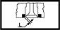
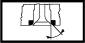
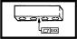
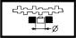
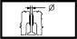

CYLINDER HEAD
- Path
- Technical Data > Manufacturing data > 10 ENGINE > 1016 CYLINDER HEAD/S > CYLINDER HEAD
- Kind
- technical data / specifications
- Applies to
- all engines; all production periods
- Interactive page
- https://sloeber94.github.io/elrnDB-lYpsln/en/#/2427737
Applies to: all engines; all production periods
Combustion chamber volume (cm) | Validity | |||
|---|---|---|---|---|
12.28 | 1.2 16v 1.4 16v | |||
Combustion chamber volume (cm) | Validity | |||
23.41 | 1.2 8v | |||
Contact band width with valve "I" (mm) | Validity |  | ||
c.a. 2 | 1.2 16v 1.2 8v | |||
Contact band width with valve "I" (mm) | Validity | |||
~ 2 | 1.4 16v | |||
Contact band with valve taper "b" () | Validity |  | ||
45˚ ± 5' | 1.2 16v | |||
Contact band with valve taper "b" (-) | Validity | |||
30˚ | 1.4 16v | |||
Contact band with valve taper "b" (-) | Validity | |||
44˚ 30' | 1.2 8v | |||
Cylinder head height (construction figure) (mm) | Validity | |||
126.5 ± 0.35 | 1.2 8v | |||
Cylinder head height (construction figure) (mm) | Validity | |||
77 ± 0.2 | 1.2 16v 1.4 16v | |||
Cylinder head-cylinder block/crankcase non alignment (mm) | Validity | |||
0.1 | 1.3 JTD | |||
Exhaust and inlet valve outer diameter (mm) | Validity | |||
22.250 - 22.550 | 1.2 16v | |||
Exhaust and inlet valve outer diameter (mm) | Validity | |||
22.55 ÷ 27.05 | 1.4 16v | |||
Exhaust valve external diameter (mm) | Validity | |||
27.20 - 27.50 | 1.2 8v | |||
Flatness of bottom surface (mm) | Validity |  | ||
0.1 | 1.3 JTD 1.4 16v | |||
Flatness of bottom surface (mm) | Validity | |||
0.1 | 1.3 JTD | |||
Flatness of bottom surface (mm) | Validity | |||
0.2 | 1.2 16v | |||
Inlet and exhaust valve stem diameter (mm) | Validity |  | ||
5.90 ÷ 5.94 | 1.4 16v | |||
Inlet and exhaust valve stem diameter (mm) | Validity | |||
5.974 - 5.992 | 1.2 16v | |||
Inlet and exhaust valve stem diameter (mm) | Validity | |||
6.982 - 7.000 | 1.2 8v | |||
Inlet valve external diameter (mm) | Validity | |||
31.20 - 31.50 | 1.2 8v | |||
Lower band taper "c" () | Validity | |||
15˚ | 1.2 16v | |||
Lower band taper"c" (-) | Validity | |||
15˚ | 1.4 16v | |||
Lower band taper"c" (-) | Validity | |||
20˚ | 1.2 8v | |||
Nominal lift (mm) | Validity | |||
105.5 ± 0.05 | 1.3 JTD | |||
Spring height (mm) | Validity |  | ||
21.5 | 1.2 8v | |||
Under load (daN) 61.4 - 65.5 | ||||
Spring height (mm) | Validity | |||
23 | 1.2 16v | |||
Under load (daN) 42.3 | ||||
Spring height (mm) | Validity | |||
25.2 | 1.4 16v | |||
Under load (daN) 36.6 | ||||
Spring height (mm) | Validity | |||
31 | 1.2 16v | |||
Under load (daN) 22.5 | ||||
Spring height (mm) | Validity | |||
31 | 1.2 8v | |||
Under load (daN) 21.2 - 23.8 | ||||
Spring height (mm) | Validity | |||
33.6 | 1.4 16v | |||
Under load (daNm) 16.7 | ||||
Tappet casing housing diameter (mm) | Validity |  | ||
35.000 - 35.025 | 1.2 8v | |||
Upper band taper "a" () | Validity | |||
70˚ | 1.2 16v | |||
Upper section taper "" (-) | Validity | |||
45˚ ± 20' | 1.4 16v | |||
Upper section taper "" (-) | Validity | |||
75˚ | 1.2 8v | |||
Valve cylindrical section thickness (mm) | Validity | |||
> 1 | 1.2 16v 1.2 8v 1.4 16v | |||
Valve guide inner diameter (mm) | Validity |  | ||
6.022 - 6.040 | 1.2 16v 1.4 16v | |||
Valve guide inner diameter (mm) | Validity | |||
7.022 - 7.040 | 1.2 8v | |||
Valve stem - valve guide clearance (mm) | Validity | |||
0.030 - 0.066 | 1.2 16v | |||
Valve stem - valve guide clearance (mm) | Validity | |||
0.14 ÷ 0.082 | 1.4 16v | |||
Valve stem - valve guide diameter (mm) | Validity | |||
0.022 - 0.058 | 1.2 8v | |||